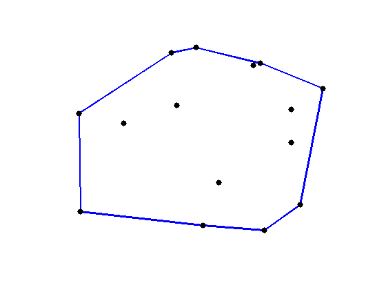

Problem D: Convex Hull

Finding the convex hull of a set of points is an important problem that
is often part of a larger problem. There are many algorithms for finding
the convex hull. Since problems involving the convex hull sometimes
appear in the ACM World Finals, it is a good idea for contestants to
know some of these algorithms.
Finding the convex hull of a set of points in the plane can be divided
into two sub-tasks. First, given a set of points, find a subset of those
points that, when joined with line segments, form a convex polygon that
encloses all of the original points. Second, output the points of the
convex hull in order, walking counter-clockwise around the polygon.
In this problem, the first sub-task has already been done for you,
and your program should complete the second sub-task. That is,
given the points that are known to lie on the convex hull, output
them in order walking counter-clockwise around the hull.
Input Specification
The first line of input contains a single integer, the number of test cases to follow.
The first line of each test case contains a single integer
3 <= n <= 100000,
the number of points. The following n lines of the test case each
describe a point. Each of these lines contains two integers and either
a Y or an N, separated by spaces. The two integers
specify the x- and y-coordinates of the point. A Y indicates
that the point is on the convex hull of all the points, and a N
indicates that it is not. The x- and y-coordinates of each point will be
no less than -1000000000 and no greater than 1000000000.
No point will appear more than once in
the same test case. The points in a test case will never all lie on
a line.
Sample Input
1
5
1 1 Y
1 -1 Y
0 0 N
-1 -1 Y
-1 1 Y
Output Specification
For each test case, generate the following output.
First, output a line containing a single integer m, the number of
points on the convex hull. Next output m lines, each describing
a point on the convex hull, in counter-clockwise order around the hull.
Each of these lines should contain the x-coordinate of the point,
followed by a space, followed by the y-coordinate of the point.
Start with the point on the hull whose x-coordinate is minimal.
If there are multiple such points, start with the one whose y-coordinate
is minimal.
Output for Sample Input
4
-1 -1
1 -1
1 1
-1 1
Ondřej Lhoták, Malcolm Sharpe